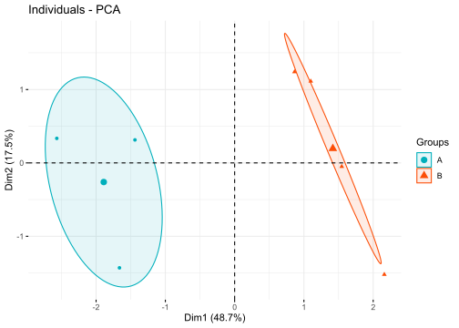
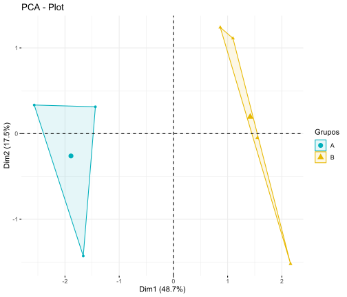
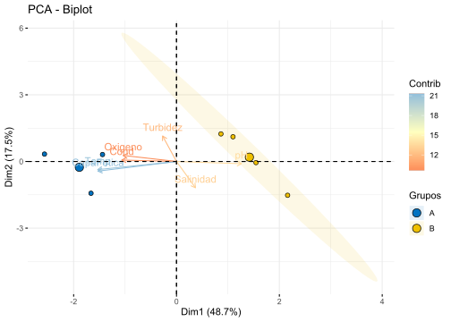
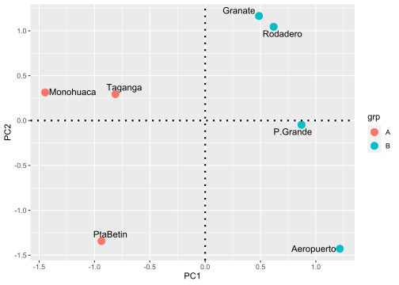

# LIBRERÍAS REQUERIDAS
library(factoextra) # Para el PCA
library(rlang) #
library(FactoMineR) # Para el PCA
library(vegan) # Para el PCA
library(ade4) # Para el PCA
library(corrplot) # Figuras de elipses
library(ggplot2) # Figuras de dispersión
library(ggforce)
library(concaveman)
library(ggrepel)Taller 9.1 Análisis de Componentes Principales - PCA
Datos fisicoquímicos de bahías
Ejemplo de bahías de Santa Marta
El siguiente ejemplo relaciona a 7 lugares en playas de de Santa Marta (observaciones) y en cada una de ellas se midieron 7 variables ambientales (descriptores). En este análisis de comonentes principales - PCA, se intenta saber cuál es la relación entre variables ambientales y cómo estas estructuran o caracterizan a las localidades estudiadas. La base de datos a trabajar es FQmarino.csv.
Ejercicio tomado de: Rodríguez-Barrios (2023) Enlace del libro
Enlace de los archivos del libro
Fuentes bibliográficas sobre el análisis de componentes principales:
PCA en factoextra - datanovia
Guía práctica sonre el PCA - datanovia
PCA para variables categóricas - R-bloggers
Capítulo PCA - Libro Numerical Ecology with R - Borcard et al. 2018
# Lectura de la base de datos "FQmarino"
datos <-read.csv2("FQmarino.csv",row.names=1) # file.choose()
View(datos)
str(datos)'data.frame': 7 obs. of 8 variables:
$ Grupo : chr "A" "A" "A" "B" ...
$ pH : num 8.42 8.49 8.51 8.56 8.61 ...
$ Cond : num 38 38.1 37.8 37.3 37.3 ...
$ Turbidez : num 1.364 0.545 1.273 1.273 0.636 ...
$ Temp : num 29.5 29.5 29.6 29.3 29.3 ...
$ Salinidad : num 2.42 2.43 2.42 2.38 2.38 ...
$ CapaFotica: num 19.7 22.1 22.1 10.8 9 ...
$ Oxigeno : num 0.097 0.147 0.331 0.17 0.098 0.098 0.098
Exploración Gráfica
# Elipses con colores
M <- cor(datos[,2:8]) # Matriz de Correlación (M)
round(head(M),2) pH Cond Turbidez Temp Salinidad CapaFotica Oxigeno
pH 1.00 -0.27 -0.04 -0.68 0.37 -0.77 -0.38
Cond -0.27 1.00 0.21 0.68 -0.19 0.61 0.12
Turbidez -0.04 0.21 1.00 0.03 -0.16 0.01 0.26
Temp -0.68 0.68 0.03 1.00 -0.03 0.97 0.59
Salinidad 0.37 -0.19 -0.16 -0.03 1.00 0.02 -0.15
CapaFotica -0.77 0.61 0.01 0.97 0.02 1.00 0.56La Figura 1 muestra la relación entre las variables, a partir de figuras de elipses.
x11() # Panel gráfico adicional
corrplot(M, method = "ellipse") # Figura de correlaciones con elipses
La Figura 2 muestra la relación entre las variables, a partir de figuras de elipses y coeficientes de correlación de Pearson.
X11()
corrplot.mixed(M, upper="ellipse") # Figura con coeficientes de correlación
La Figura 3 otra forma de mostrar la relación entre las variables, a partir de figuras de elipses y coeficientes de correlación de Pearson.
x11()
corrplot(M, method = "circle", # Correlaciones con circulos
type = "lower", insig="blank", # Forma del panel
order = "AOE", diag = FALSE, # Ordenar por nivel de correlación
addCoef.col ="black", # Color de los coeficientes
number.cex = 0.8, # Tamaño del texto
col = COL2("RdYlBu", 200)) # Transparencia de los circulos
1) PCA con el paquete stats (pca1)
pca1 <- princomp(datos[2:8],cor=TRUE)
1.1) Valores propios - autovalores para medir el ajuste del PCA
summary(pca1)Importance of components:
Comp.1 Comp.2 Comp.3 Comp.4 Comp.5
Standard deviation 1.8454563 1.1063340 0.9919952 0.9474050 0.68078731
Proportion of Variance 0.4865298 0.1748536 0.1405792 0.1282252 0.06621019
Cumulative Proportion 0.4865298 0.6613834 0.8019626 0.9301878 0.99639798
Comp.6 Comp.7
Standard deviation 0.158789715 0
Proportion of Variance 0.003602025 0
Cumulative Proportion 1.000000000 1
1.2) Insumos del pca (names)
names(pca1)[1] "sdev" "loadings" "center" "scale" "n.obs" "scores" "call"
1.3) Valores propios - autovectores y escores
round(pca1$loadings,2) # Autoectores (loadings)
Loadings:
Comp.1 Comp.2 Comp.3 Comp.4 Comp.5 Comp.6 Comp.7
pH 0.43 0.42 0.18 0.61 0.20 0.45
Cond -0.36 0.16 0.74 0.27 -0.35 -0.32
Turbidez -0.65 0.62 -0.41 0.11
Temp -0.52 0.21 0.81 -0.10
Salinidad 0.13 0.67 0.60 -0.11 -0.29 -0.13 -0.26
CapaFotica -0.52 0.25 -0.13 -0.29 0.75
Oxigeno -0.35 -0.15 0.24 -0.63 0.53 -0.25 -0.22
Comp.1 Comp.2 Comp.3 Comp.4 Comp.5 Comp.6 Comp.7
SS loadings 1.003 1.006 1.010 0.992 1.003 0.994 1.002
Proportion Var 0.143 0.144 0.144 0.142 0.143 0.142 0.143
Cumulative Var 0.143 0.287 0.431 0.573 0.716 0.858 1.001round(pca1$scores,2) # Coordenadas de las localidades (Scores) Comp.1 Comp.2 Comp.3 Comp.4 Comp.5 Comp.6 Comp.7
Taganga -1.55 -0.34 0.14 0.85 -1.34 0.11 0
PtaBetin -1.80 1.54 -0.97 0.67 0.36 -0.19 0
Monohuaca -2.77 -0.36 0.84 -1.20 0.63 0.11 0
Granate 0.93 -1.34 -0.27 -0.96 -0.41 -0.27 0
P.Grande 1.67 0.05 -1.70 -0.52 0.16 0.22 0
Rodadero 1.19 -1.20 0.58 1.53 0.82 0.01 0
Aeropuerto 2.33 1.64 1.38 -0.36 -0.22 0.01 0
1.4) Contribución de los ejes del pca
La Figura 4 muestra la manera de graficar a la varinza que captura cada componente principal.
x11()
screeplot(pca1,ylab="Varianza",main="",
cex.lab=1.5, col="lightblue")
1.5) Opciones de biplot, por combinaciones de ejes.
La Figura 5 muestra la ordenación de las locaidades y las variables ambientales en las 7 bahías evaluadas (gráfico de biplot).
biplot(pca1,choices = 1:2, cex=0.9)
abline(v=0,lty=2, col=4)
abline(h=0,lty=2, col=4)
# Otras opciones de pca por combinaciones de ejes
biplot(pca1,choices = 2:3, cex=0.9)
biplot(pca1,choices = c(1,3), cex=0.9)
2) PCA con el paquete FactoMiner
2.1) Inserción de las variables al PCA
# Insertar las variables al PCA
names(datos)[1] "Grupo" "pH" "Cond" "Turbidez" "Temp"
[6] "Salinidad" "CapaFotica" "Oxigeno" datos.PCA<-datos[, c("pH", "Cond", "Turbidez", "Temp", "Salinidad",
"CapaFotica", "Oxigeno")]
2.1) PCA con escalamiento de las variables (similar a la matriz de correlación)
# Realización del pca con la librería FactoMiner
pca2<-PCA(datos.PCA , scale.unit=TRUE, ncp=5, graph = FALSE)
2.2) Figura del PCA
La Figura 6 muestra la ordenación de las locaidades en las 7 bahías evaluadas (gráfico de biplot).
# Figura del pca realizado (grafica de observaciones)
plot.PCA(pca2, axes=c(1, 2), choix="ind", habillage="none", col.ind="black",
col.ind.sup="blue", col.quali="magenta",
label=c("ind", "ind.sup", "quali"))
2.3) Circulo de contribuciones de las variables
La Figura 7 muestra el circulo de contribuciones para identificar a las variables con mayor aporte por cada componente principal del análisis.
# Circulo de contribuciones
plot.PCA(pca2, axes=c(1, 2), choix="var", col.var="#ff0000", new.plot=T,
col.quanti.sup="blue", label=c("var", "quanti.sup"), lim.cos2.var=0)
2.4) Selección de variables a partir del PCA
# Variables con mayor aporte al PC1
dimdesc=dimdesc(pca2, axes=1:2)
round(dimdesc$Dim.1$quanti,4) correlation p.value
Temp 0.9594 0.0006
CapaFotica 0.9564 0.0007
pH -0.7899 0.0346
3) PCA con el paquete vegan
# Realización del pca
pca3 <- rda(datos[,c(2:8)], scale = TRUE)
3.1) Insumos del análisis
# Insumos del pca
summary(pca3)
Call:
rda(X = datos[, c(2:8)], scale = TRUE)
Partitioning of correlations:
Inertia Proportion
Total 7 1
Unconstrained 7 1
Eigenvalues, and their contribution to the correlations
Importance of components:
PC1 PC2 PC3 PC4 PC5 PC6
Eigenvalue 3.4057 1.2240 0.9841 0.8976 0.46347 0.025214
Proportion Explained 0.4865 0.1749 0.1406 0.1282 0.06621 0.003602
Cumulative Proportion 0.4865 0.6614 0.8020 0.9302 0.99640 1.000000
Scaling 2 for species and site scores
* Species are scaled proportional to eigenvalues
* Sites are unscaled: weighted dispersion equal on all dimensions
* General scaling constant of scores: 2.54573
Species scores
PC1 PC2 PC3 PC4 PC5 PC6
pH 0.7600 -0.05946 -0.39634 0.16779 0.39815 -0.03017
Cond -0.6409 0.03919 -0.15521 0.67510 0.17577 0.05298
Turbidez -0.1626 0.69132 -0.59117 0.02172 -0.26687 -0.01640
Temp -0.9231 -0.21981 -0.06696 0.04433 0.05922 -0.12436
Salinidad 0.2220 -0.71203 -0.56910 -0.09845 -0.18854 0.02044
CapaFotica -0.9203 -0.26095 -0.03157 -0.01094 -0.08801 0.04456
Oxigeno -0.6245 0.16367 -0.22590 -0.57864 0.34878 0.03860
Site scores (weighted sums of species scores)
PC1 PC2 PC3 PC4 PC5 PC6
Taganga -0.8103 0.29431 -0.1336 0.8605 -1.8923 -0.68752
PtaBetin -0.9363 -1.34295 0.9378 0.6784 0.5141 1.12733
Monohuaca -1.4457 0.31382 -0.8173 -1.2159 0.8964 -0.64531
Granate 0.4866 1.16512 0.2621 -0.9789 -0.5863 1.60931
P.Grande 0.8705 -0.04719 1.6534 -0.5317 0.2280 -1.31394
Rodadero 0.6186 1.04517 -0.5617 1.5570 1.1561 -0.05927
Aeropuerto 1.2166 -1.42828 -1.3407 -0.3694 -0.3161 -0.03060
3.2) Autovalores
# Ajuste del pca
round((ev <- pca3$CA$eig),2) PC1 PC2 PC3 PC4 PC5 PC6
3.41 1.22 0.98 0.90 0.46 0.03
3.3) Figura del PCA
La Figura 8 muestra dos opciones de visualizar los resultados del pca “scaling 1” y “scaling 2”.
# Panel con dos figuras del pca
x11(12,6)
par(mfrow=c(1,2))
biplot(pca3, scaling=1, main="PCA - scaling 1")
biplot(pca3, main="PCA - scaling 2") 
#—
Taller en casa
Realizar el cálculo del los siguientes insumos de la página 126 a 127, del libro Análisis de datos ecológicos y ambientales: Aplicaciones con el programa R el cual se encuentra en la biblioteca.
Ajuste de los componentes principales.
Figura de atovalores
- Figura del modelo de Kaiser
- Figura del modelo de Vara Quebrada
5) PCA por tipos con la función “dudi.pca” del paquete ade4
pca5 <- dudi.pca(datos[,c(2:8)],scannf=F,nf=2,scale=T)
5.1) Figuras del pca por tipo de grupo
La Figura 9 muestra el agrupamiento por líneas en el pca.
datos$Grupo <- as.factor(datos$Grupo)
s.class(pca5$li,datos$Grupo, cell = 0, cstar = 0.5)
#—-
6) PCA con paquete ggplot2
Realización pca de los paquetes factoextra y ggbiplot Para gererar las coordenadas de los sitios y taxones
# Nuevamente el pca
pca6 <- rda(datos[2:8],scale=TRUE)
names(summary(pca6)) [1] "species" "sites" "call" "tot.chi" "unconst.chi"
[6] "cont" "scaling" "digits" "inertia" "method"
6.1 Coordenadas de los sitios y el factor “coord.sit”
coord.sit <- as.data.frame(summary(pca6)$"sites"[,1:2]) # Coordenadas de los sitios
coord.sit$sitio <- rownames(coord.sit) # Crear una columna con nombres de los sitios
coord.sit$grp <- datos$Grupo # Adicionar columna por Grupos
head(coord.sit) # vista resumida de las coordenadas de sitios PC1 PC2 sitio grp
Taganga -0.8103355 0.29431456 Taganga A
PtaBetin -0.9362688 -1.34295170 PtaBetin A
Monohuaca -1.4457313 0.31382105 Monohuaca A
Granate 0.4866006 1.16512115 Granate B
P.Grande 0.8704999 -0.04719406 P.Grande B
Rodadero 0.6186489 1.04517307 Rodadero B
6.2 Coordenadas de las variables ambientales “coord.amb”
coord.amb <- as.data.frame(summary(pca6)$"species"[,1:2]) # Dos primeros ejes
coord.amb$var.amb. <- rownames(coord.amb) # Insertar columna con nombres de las variables ambientales
head(coord.amb) PC1 PC2 var.amb.
pH 0.7600032 -0.05945541 pH
Cond -0.6408840 0.03919162 Cond
Turbidez -0.1626470 0.69131712 Turbidez
Temp -0.9230823 -0.21981458 Temp
Salinidad 0.2220233 -0.71203126 Salinidad
CapaFotica -0.9202592 -0.26095002 CapaFotica
6.4 Figura con de elipses por concavidades - geom_mark_hull
La Figura 10 muestra la ordenación de las localidades, las variables ambientales y los grupos de localidades.
x11(6,6)
ggplot() +
# Sitios
geom_text_repel(data = coord.sit,aes(PC1,PC2,label=row.names(coord.sit)),
size=4)+ # Muestra el cuadro de la figura
geom_point(data = coord.sit,aes(PC1,PC2,colour=grp),size=4)+
scale_shape_manual(values = c(21:25))+
# Taxones *valores de cero para caracteres de las flechas (arrow)
geom_segment(data = coord.amb,aes(x = 0, y = 0, xend = PC1, yend = PC2),
arrow = arrow(angle=22.5,length = unit(0.25,"cm"),
type = "closed"),linetype=1, size=0.6,colour = "blue")+
geom_text_repel(data = coord.amb,aes(PC1,PC2,label=var.amb.),colour = "blue")+
# Factor
geom_mark_hull(data=coord.sit, aes(x=PC1,y=PC2,fill=grp,group=grp,
colour=grp),alpha=0.30) +
geom_hline(yintercept=0,linetype=3,size=1) +
geom_vline(xintercept=0,linetype=3,size=1)+
guides(shape=guide_legend(title=NULL,color="black"),
fill=guide_legend(title=NULL))+
theme_bw()+theme(panel.grid=element_blank())Nota Probar la capa de factor con otras opciones de agrupamiento como esta:
geom_polygon(data=coord.sit,aes(x=PC1,y=PC2,fill=grp,group=grp),alpha=0.30) +